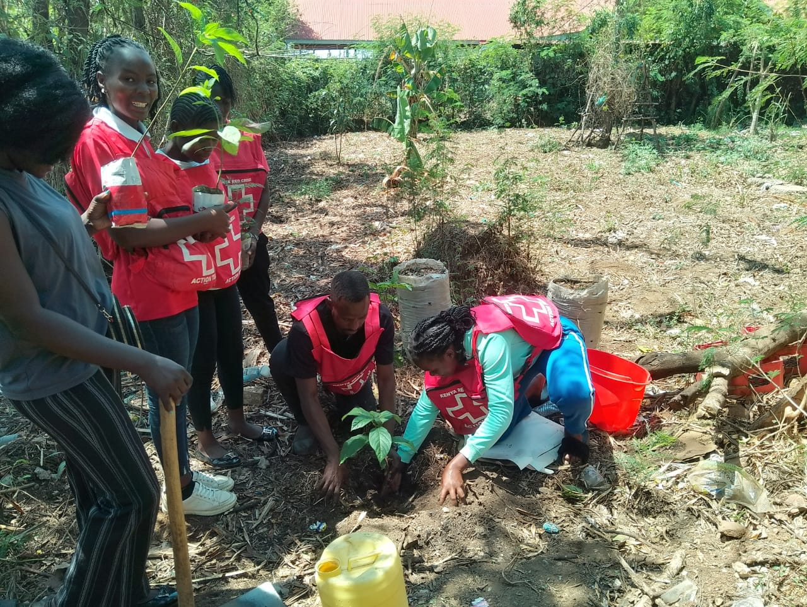

It is probable that climate change will negatively influence Kenya’s future development and hence LCAG would like to contribute to achievement goals of Vision 2030, the long-term development blueprint, and the Big Four Agenda that centralizes food and nutrition security, affordable and decent housing, increased manufacturing, and affordable healthcare.
A link to the NCCAP is here below
NCCAP DOWNLOADTo create a sustainable future through proactive climate action, environmental stewardship, and empowerment of communities.
seedlings preparations by group members
To inspire and mobilize individuals and communities towards meaningful action against climate change by promoting environmental awareness, education, and sustainable living.
Educate the public on climate change and sustainability.
Advocate for policies that promote environmental protection.
Engage in community-driven climate action projects
Promote renewable energy and reduce reliance on fossil fuels.
Foster partnerships with local and global environmental organizations

LCAG advocating for renewable energy source
tree planting session at Kenya Red Cross Society-Kisumu Branch
Disaster risk management :Limitless looks to reduce risks to communities and infrastructure in Kisumu County particularly floods which impacts the socioeconomic livelihood for people along the lake.
Water and the Blue Economy :Limitless looks to enhance the resilience of Lake basin region’s Blue Economy and water sector by ensuring access to and efficient use of water for agriculture, manufacturing, domestic, wildlife, and other uses
Forestry, wildlife, and tourism: Limitless is looking to contribute to NCCAP’s desire to increase forest cover by 10% of the total land area through rehabilitating degraded lands and increasing resilience of wildlife and the broader tourism sector.
Health, sanitation, and human settlements: Limitless is looking to contribute to mainstream climate change adaptation Healthwise by increasing the resilience of human settlements through improved solid waste management in urban areas within the county.
LCAG at THE KENYA LANDSCAPES ACTOR'S CONFERENCE 2024
This is a four day conference that is held at the Ole sereni hotel in Nairobi that started the 4th November 2024 all the way to the 8th of November 2024
Key partners include;CGIAR ,The Rock feller foundation, ILRI, CEROPS,Tsavo ,WWF, LAICONAR, CABI,Rain Forest Alliance,CIFOR among others.
Kenya Landscapes actor's platform (KENLAP) Is a platform bringing together organization from Kenya and beyond to bring in solutions to restoration of landscapes, climate change impacts,forestry, agriculture ecosystem functionality , conservation and wildlife protection , livelihood among others.
Limitless climate action group, together with other organizations both from the grassroots and national level joined in to discuss about the key major objectives of KENLAP
*Day 1*
Introduction, expectations, opening remarks,CGIAR environment impacts and biodiversity impact platforms.
Initiatives on landscape restoration,policies and strategies.
Institutional frameworks for integrated landscape management.
*Day 2*
Presentation by World resource institute and county government representatives.
Key notes
Amplifying the voices of community and youth.
CGIAR environment and biodiversity impact.
Cross boarder landscape conservation.
Transforming food systems for ecosystem protection and restoration
Solutions to climate change impacts from an adaptation and mitigation perspective.
The major aim for limitless climate action group in joining the congress is recognition, learning and networking